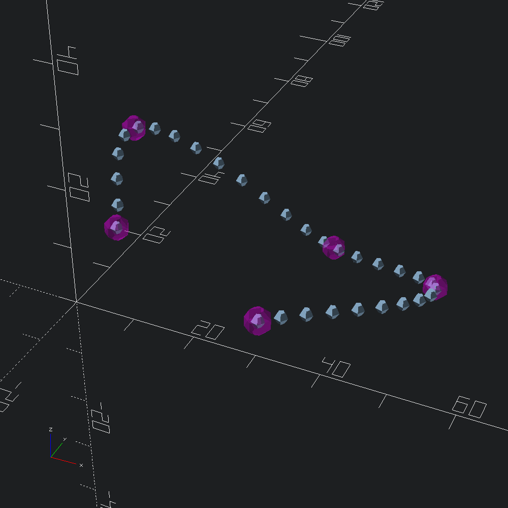
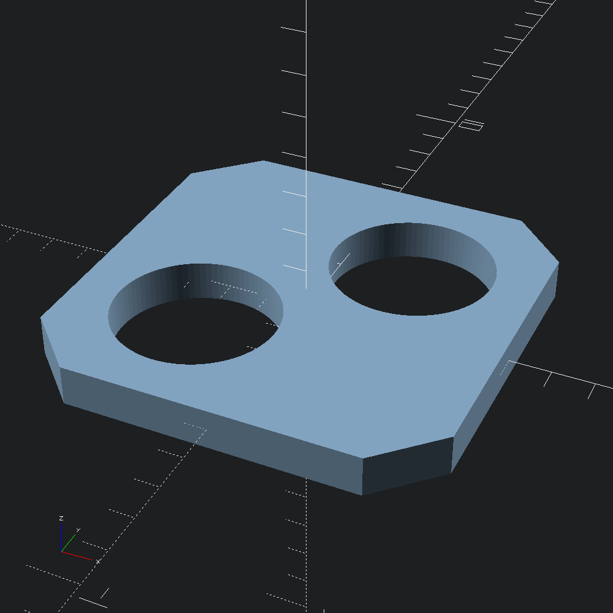
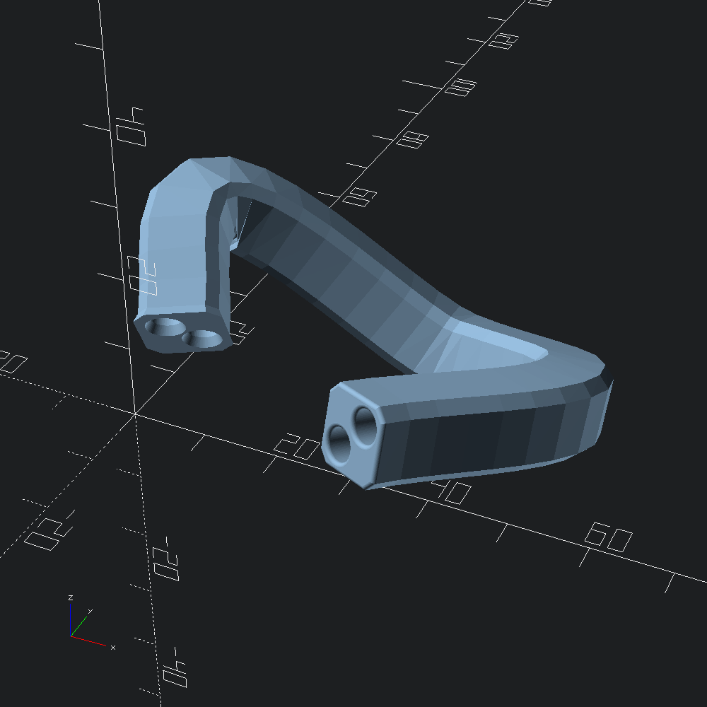
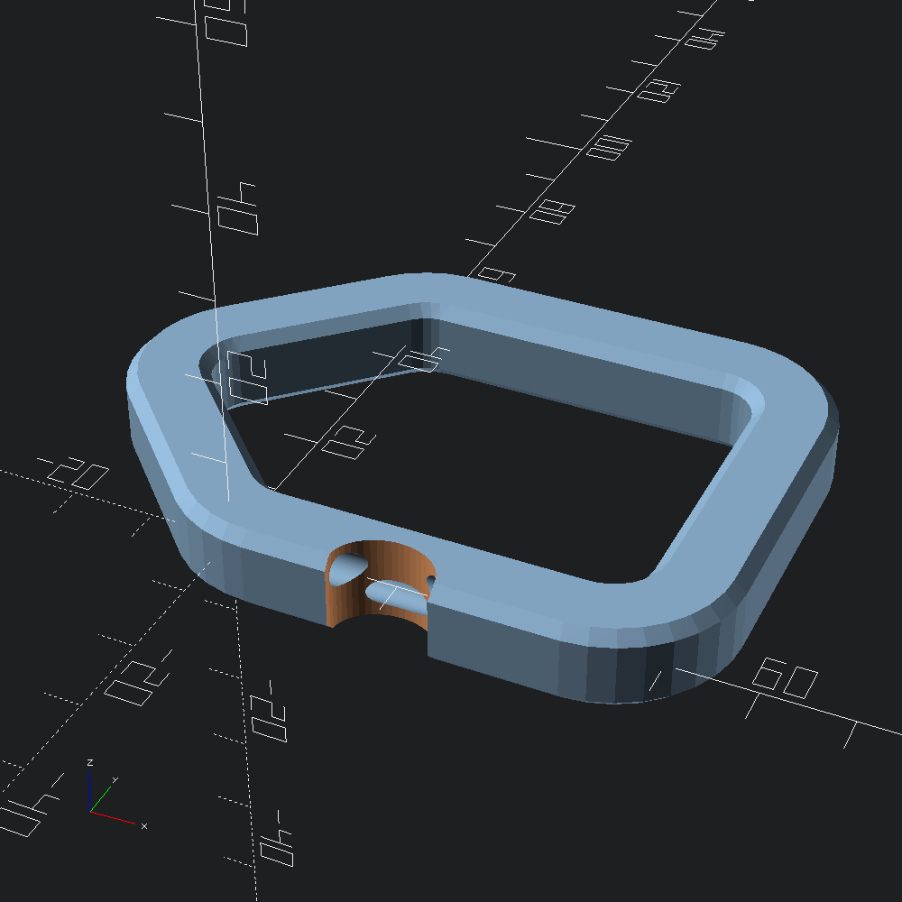

open OCADml
open OSCADmlCreate a bezier spline function which passes through all of points in control using Bezier3.of_path, and interpolate 20 points along it to create our path with Bezier3.curve.
let control =
V3.[ v 5. 5. 12.; v 0. 20. 20.; v 30. 30. 0.; v 50. 20. 5.; v 35. (-10.) 15. ]
let path = Bezier3.curve ~fn:30 @@ Bezier3.of_path controlWe can quickly visualize path, and the control points that it passes through by using the Debug.show_path3 helper, which places a Scad.d3 shape at each point along the path (this takes a function from index to shape, rather than a shape directly to allow for differentiating the points, e.g. numbering with Scad.text).
let () =
Scad.to_file "bezier_spline_path.scad"
@@ Scad.union
[ Debug.show_path3 (fun _ -> Scad.sphere 1.) path
; Debug.show_path3
(fun _ -> Scad.(color ~alpha:0.3 Color.Magenta @@ sphere 2.))
control
]
Draw a 2d polygon with a chamfered square outline, and two circular holes. Chamfering the square outer path is accomplished via Path2.roundover, which takes a Path2.Round.t specifation, built here using the Path2.Round.flat constructor, that tells Path2.roundover to apply ~corner to all of the points of the given path.
let poly =
let holes =
let s = Path2.circle ~fn:90 2.
and d = 1.9 in
Path2.[ translate (v2 (-.d) (-.d)) s; translate (v2 d d) s ]
and outer =
Path2.square ~center:true (v2 10. 10.)
|> Path2.Round.(flat ~corner:(chamf (`Width 2.)))
|> Path2.roundover
in
Poly2.make ~holes outer2d shapes defined with Poly2.t can be translated into OpenSCAD polygons by way of Poly2.to_scad.
let () = Scad.to_file "chamfered_square_with_holes.scad" (Scad.of_poly2 poly)
Mesh.sweep derived functions take a ~caps parameter that specifies what to do with the end faces of the extruded mesh. By default, both caps are flat and identical to the input polygon (Mesh.Cap.flat_caps), but in this example, we will be rounding them over.
To build our caps, we'll use the Mesh.Cap.capped constructor which takes specification types for how we would like to treat the bottom and top faces of our extrusion. In this case, we'll be applying roundovers to both the bottom and top faces, so we use Mesh.Cap.round which takes an Mesh.Cap.offsets containing the offset distance/radius and "vertical" step for each outline of the outer roundover, and optionally, the desired treatment of the inner paths (as ~holes). Typically, the offsets will be generated by a helper such as Mesh.Cap.chamf and Mesh.Cap.circ below.
Here we apply a negative (outward flaring) chamfer to the bottom face, setting holes to `Same, so that the circular holes in poly are also expanded, rather than pinched off (default is (~holes:`Flip), which negates the outer roundover for inner paths). For the top face, we specify a positive (inward) circular roundover, leaving holes as its default since we want the holes to flare out instead.
let caps =
Mesh.Cap.(
capped
~bot:(round ~holes:`Same @@ chamf ~height:(-1.2) ~angle:(Float.pi /. 8.) ())
~top:(round @@ circ (`Radius 0.5)))Extrude poly along path, with rounding over the end caps according to caps using Mesh.path_extrude.
let mesh = Mesh.path_extrude ~path ~caps polyConvert our mesh into an OpenSCAD polyhedron and output to file with Scad.of_mesh.
let () = Scad.to_file "rounded_polyhole_sweep.scad" (Scad.of_mesh mesh)
Rounded 3d paths for sweeping can also be drawn with the help of the Path3.Round module, which works much the same as its counterpart in Path2 that we used to chamfer our poly earlier.
let rounded_path =
Path3.(
roundover ~fn:32
@@ Round.flat
~closed:true
~corner:(Round.circ (`Radius 10.))
(v3 (-25.) 25. 0. :: Path3.square (v2 50. 50.)))Mesh.path_extrude (and other functions derived from Mesh.sweep) can be given ~caps:`Looped, which will connect the final position of the sweep up with the beginning, rather than sealing both ends off with caps. If the swept polygon has holes (as our poly does), they will be included, and continuous much like the outer shape.
let () =
let loop = Scad.of_mesh @@ Mesh.(path_extrude ~caps:Cap.looped ~path:rounded_path poly)
and cut =
Scad.cylinder ~fn:50 ~center:true ~height:11. 5.
|> Scad.scale (v3 1.2 1. 1.)
|> Scad.translate (v3 20. (-4.) 0.)
in
Scad.difference loop [ cut ] |> Scad.to_file "chamfered_loop.scad"